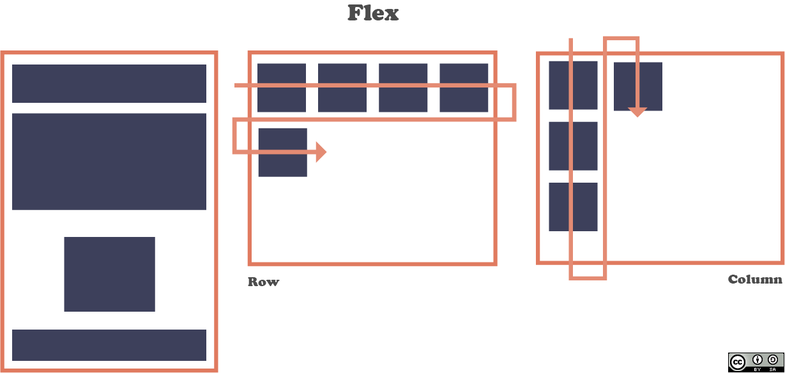

Flex box.
En español caja flexible, es un diseño de unidimensional de layout que ayuda a distribuir espacios de los ítems en una interfaz de este modo todo se encuentra más alineado.
Se habla de unidimensional ya que solo controla una dimensión a la vez, sea columna o fila.
La flex box posee dos ejes, el eje principal y el eje cruzado, usualmente definido así:
Eje principal se define por flex-direction y posee cuatro (posibles) valores: row, row-reverse, column, column-reverse.
Teniendo en cuenta las dos primeras el eje principal ira a lo largo de la fila según la dirección de línea, por el contrario, si se tiene en cuenta las últimas dos, ira desde el borde superior hasta el final de la página siguiendo la dirección del bloque.

Eje cruzado, este es perpendicular al eje principal así que si el eje principal es row el eje ira por las columnas y si es column ira cruzado por las filas.